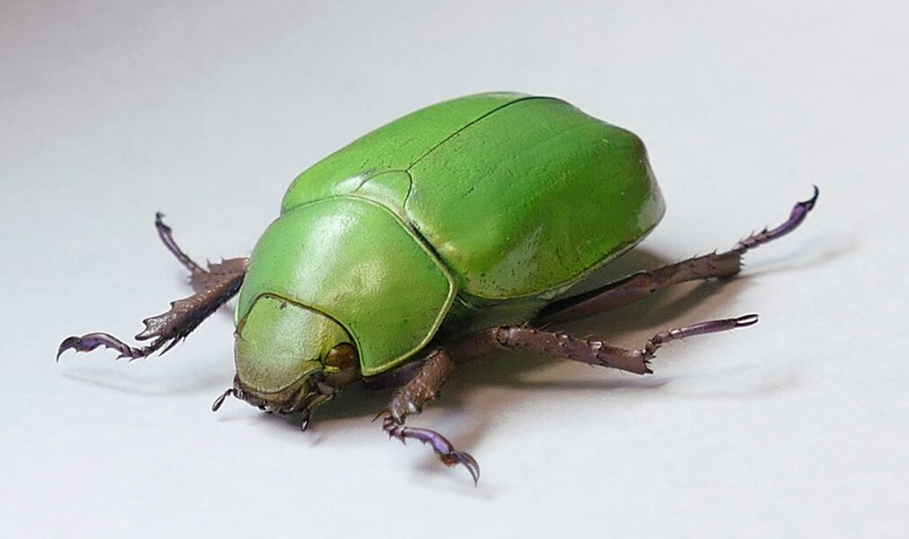
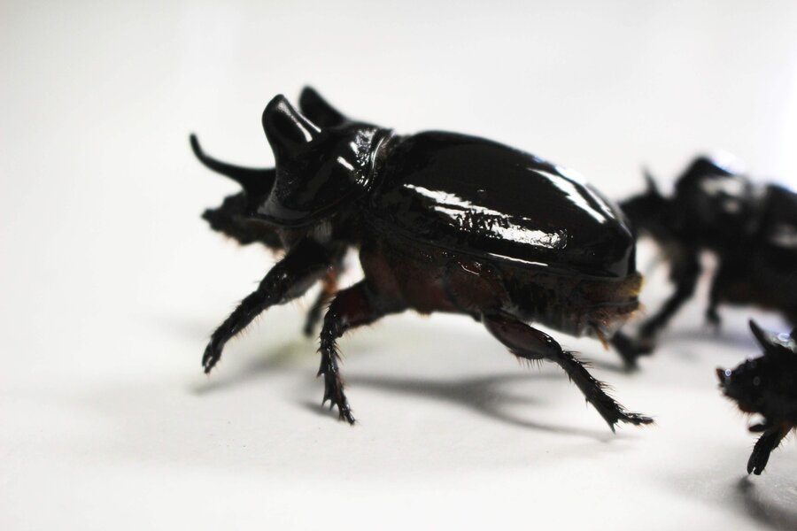

Coleoptera Genomics

Why Beetle Genomes Matter
Coleoptera is the most species-rich order of any organism on Earth. With approximately 400,000 described species, beetles account for roughly 25% of all known animal species and about 40% of all insects. No other order — of any kingdom — comes close.
Beetles occupy nearly every terrestrial and freshwater habitat on the planet. They include critical pollinators (scarabs, longhorns), decomposers (burying beetles, dung beetles), agricultural pests (Colorado potato beetle, boll weevil, bark beetles), and forest ecosystem engineers (bark beetles that drive succession in conifer forests).
Yet genomic resources for Coleoptera have lagged far behind Diptera (flies) and Lepidoptera (butterflies and moths). For years, Tribolium castaneum (the red flour beetle) was essentially the only high-quality beetle reference genome. This meant that the most species-rich order of life was also one of the least genomically characterized.
The genomic revolution in Coleoptera is now underway. New long-read sequencing technologies — PacBio HiFi and Oxford Nanopore — combined with Hi-C chromosome scaffolding have made chromosome-level beetle assemblies achievable for any species, not just model organisms.
Understanding beetle genomes matters for multiple reasons:
- Pest management — bark beetles, crop pests, and stored-product beetles cause billions of dollars in damage annually. Genomics enables targeted control strategies.
- Conservation — endangered beetle species need genomic baselines for population viability and genetic rescue.
- Fundamental biology — why are there so many beetle species? What is different about their genomes?
- Comparative genomics — beetles span 325+ million years of evolution, providing a massive comparative framework.
Key Papers
Stevens Elements — The Chromosomal Building Blocks
Just as Drosophila has Muller elements (A–F), beetles have their own set of conserved chromosomal elements. We call these Stevens elements, named after Nettie Stevens, who discovered sex chromosomes in 1905 while studying the mealworm beetle Tenebrio molitor.
Stevens elements represent ancestral linkage groups that have been conserved across beetle evolution despite hundreds of millions of years of divergence. Even when chromosome numbers change dramatically through fusions and fissions, the gene content of these elements tends to stay together as syntenic blocks.
The Tribolium castaneum genome (2n = 20, or 10 chromosome pairs) provided the initial framework for defining these elements. Comparative mapping to other beetle species reveals remarkable conservation of synteny blocks, even across species with radically different chromosome numbers.
Why Stevens Elements Matter
Understanding these conserved elements is essential for:
- Tracing the history of chromosome rearrangements — which fusions and fissions occurred in a lineage
- Determining sex chromosome homology — identifying which element became the X or Y in different species
- Understanding dosage compensation — are the same genes compensated when different elements become sex-linked?
- Reconstructing ancestral karyotypes — what did the beetle ancestor's chromosomes look like?
Key Papers
Note: Data shown are simulated for illustrative purposes and do not represent real synteny analyses.
Lab-Produced Genomes
The Blackmon Lab is actively generating chromosome-level genome assemblies for beetle species chosen to answer specific evolutionary questions. Each genome project targets a species that fills a key gap in our understanding of beetle genome evolution.
Our approach combines multiple technologies:
- PacBio HiFi sequencing — highly accurate long reads (>99.9% accuracy, 15–20 kb read lengths) for contiguous assembly
- Hi-C scaffolding — chromosome conformation capture to order and orient contigs into chromosome-level scaffolds
- RNA-seq — transcriptome data for gene annotation and expression analysis
Assemblies are evaluated using BUSCO completeness scores (typically >95% for our chromosome-level assemblies) and compared to karyotype data from our comprehensive databases of over 14,000 beetle karyotype records.
Each genome below was chosen not just for its biological interest, but for its strategic placement in the beetle tree of life — filling phylogenetic gaps and enabling comparative analyses that would be impossible with genomes from model organisms alone.
Our Genomes
Dosage Compensation in Beetles
Most beetles have XY sex determination, though some possess more exotic systems: Xyp (parachute sex chromosomes), neo-XY (autosome fused to an ancestral sex chromosome), or X0 (Y chromosome lost entirely). Beetles have more sex chromosome system diversity than almost any other order.
Dosage compensation addresses a fundamental problem: males have one X chromosome while females have two. This means X-linked genes are at half dosage in the heterogametic sex — potentially halving the expression of hundreds of genes.
Solutions Across Life
What About Beetles?
The answer is complex and varies across species. Tribolium castaneum shows incomplete dosage compensation — some X-linked genes are compensated (expression ratio near 1:1 between sexes), while others are not (expression ratio near 0.5 in males). This incomplete pattern may be ancestral for beetles.
The Blackmon Lab investigates dosage compensation patterns across beetle species using RNA-seq and coverage-based sex chromosome identification. By comparing male and female read depth across the genome, we can identify sex-linked scaffolds without any prior genetic map.
Key Papers
Note: Data shown are simulated for illustrative purposes and do not represent real coverage analyses.
Note: Expression ratios shown are simulated for illustrative purposes and do not represent real RNA-seq data.
Population Size, Gene Flow, and Beetle Diversity
Effective population size (Ne) is one of the most important parameters in evolutionary genetics. It determines the relative power of genetic drift versus natural selection, the rate of adaptive evolution, the level of standing genetic variation, and the probability of fixing new mutations.
Beetles span an enormous range of population sizes: from widespread agricultural pests with Ne in the millions (Colorado potato beetle, bark beetles during outbreaks) to narrowly endemic montane species with Ne in the hundreds (flightless ground beetles on isolated sky islands).
Gene Flow and Dispersal
Gene flow connects populations and homogenizes allele frequencies. In beetles, gene flow depends critically on dispersal ability (flight versus flightlessness), habitat connectivity, and life history traits.
Flightless beetle species tend to have:
- Smaller effective population sizes
- Stronger population genetic structure (higher Fst)
- Higher rates of allopatric speciation
- Potentially faster chromosome evolution — connecting to the drift barrier hypothesis for karyotype change
Population Genomic Approaches
Modern population genomics uses several complementary approaches:
- π (nucleotide diversity) estimates Ne × μ
- Fst between populations measures genetic differentiation
- PSMC / SMC++ reconstructs Ne through time from a single genome
- Admixture analysis reveals hybridization and introgression
Key Papers
Note: PSMC curves shown are simulated for illustrative purposes and do not represent real demographic reconstructions.
Beetle Phylogenomics
Resolving the beetle tree of life has been one of the great challenges in systematic biology. With approximately 400,000 species across roughly 200 families, the phylogenetic relationships among major beetle lineages remained contentious for decades.
Genomic data has transformed beetle systematics. Transcriptomes and whole genomes provide thousands of loci for phylogenetic inference, resolving relationships that were ambiguous with morphology or single genes.
The Four Beetle Suborders
Coleoptera is divided into four suborders, each with a distinctive body plan and ecology:
- Adephaga — ground beetles, tiger beetles, diving beetles (~45,000 species). Predatory, with strong mandibles.
- Archostemata — reticulated beetles (~40 species). Ancient relicts, the most basal living beetles.
- Myxophaga — tiny aquatic beetles (~100 species). Algae feeders in water films.
- Polyphaga — the vast majority (~350,000 species). Includes weevils, scarabs, longhorns, ladybugs, fireflies, and nearly every beetle you have ever seen.
Key Resolved Relationships
Genomic phylogenetics has resolved several long-standing debates:
- The placement of weevils (Curculionoidea) deep within Polyphaga
- The rapid radiation of phytophagous beetles coinciding with angiosperm diversification
- Beetles originated approximately ~325 million years ago (Carboniferous) and survived the end-Permian mass extinction
- Most modern beetle families diversified during the Cretaceous terrestrial revolution
Key Papers
Comparative Genomics Across Beetles
With multiple chromosome-level beetle genomes now available, comparative genomics is revealing the forces shaping beetle genome evolution at unprecedented resolution.
Genome Size Variation
Beetles show substantial genome size variation, from compact genomes of approximately 150 Mb in some small species to bloated genomes exceeding 2 Gb in others. What drives this variation? Three major forces contribute:
- Transposable element dynamics — TE expansions can dramatically inflate genome size, while efficient deletion mechanisms keep some genomes compact
- DNA deletion rates — species with faster rates of DNA loss tend to have smaller genomes
- Polyploidy — rare in beetles but documented in some weevil lineages
Gene Family Evolution
Beetles have expanded and contracted specific gene families relative to other insects. Two families are particularly dynamic:
- Olfactory receptors (ORs) — expanded in bark beetles that must locate host trees and pheromone sources over long distances
- Gustatory receptors (GRs) — expanded in phytophagous species that must evaluate host plant chemistry
- Cytochrome P450s — detoxification genes expanded in species feeding on chemically defended plants
Synteny and Chromosome Evolution
Despite chromosome number variation ranging from 2n = 4 (some bark beetles) to 2n = 72+ (some longhorns), many synteny blocks are conserved across hundreds of millions of years. Chromosome fusions and fissions reshuffle these blocks without disrupting the genes within them, consistent with the Stevens element framework.
Repetitive DNA
Transposable elements make up a variable fraction of beetle genomes. Some lineages have experienced TE expansions (genome obesity), particularly in species with large genomes and small Ne. Others maintain compact genomes through efficient deletion, especially species with large population sizes where selection against genomic bloat is more effective.
Key Papers
The Future of Beetle Genomics
Large-scale initiatives are rapidly expanding beetle genomic resources. The Earth BioGenome Project, i5K (5,000 insect genomes), and national genome projects around the world are making beetle genomes available at an accelerating pace.
Coming Frontiers
- Pan-genomes — capturing structural variation within species, moving beyond single reference genomes to understand the full complement of genetic diversity
- Population-level resequencing — whole-genome resequencing of hundreds of individuals across hundreds of beetle species, revealing selection pressures and demographic histories
- Functional genomics — CRISPR gene editing in non-model beetles, moving from correlation to causation in understanding gene function
- Conservation genomics — genetic rescue and monitoring for endangered species, using genomic data to guide management decisions
- Metagenomics — beetle-microbiome interactions, particularly the obligate symbioses in bark beetles and grain beetles that enable exploitation of nutritionally poor substrates
The Big Question
Why are there so many beetle species? Is it adaptive radiation into new ecological niches? Key innovations (phytophagy, complete metamorphosis, elytra protecting flight wings)? Geographic opportunity? Or something about their genomes — perhaps high rates of chromosome rearrangement that promote speciation, or gene family expansions that enable rapid adaptation?
Comparative genomics across the order may finally answer Haldane's famous (possibly apocryphal) quip about "an inordinate fondness for beetles." The answer is likely multifactorial, and it will require exactly the kind of integrative approach our lab takes — combining karyotype databases, genome assemblies, population genomics, and phylogenetic comparative methods.
The Blackmon Lab's Contribution
Our karyotype databases (14,000+ records for beetles alone), genome assemblies, and population genomic studies provide the foundation for answering these questions at genomic scale. By integrating cytogenetic, genomic, and phylogenetic data, we aim to understand not just how beetle genomes evolve, but why they evolve the way they do.
Key Papers

